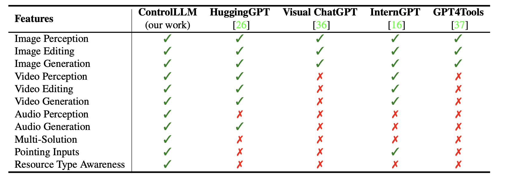

Thoughts on Graphs
By using the multimodal interaction framework ControlLLM, it is possible to use LLM as the main controller, integrate tools with different functions as plugins, and use the proposed Thoughts on Graph (TOG) algorithm for reasonable task decomposition, tool selection, and efficient tool execution tuning, making the model more efficient and accurate in understanding user needs.
Overall Framework
The framework consists of three stages. The first stage is task decomposition, which parses the user input into several subtasks. Then, in Stage 2, ToG utilizes a depth-first search algorithm to find the optimal solution for each subtask. The execution engine in the last stage executes the solution and returns the output to users. We here use the example of generating a web page for the video to illustrate our method.
Features
The table shows that our framework supports more features that facilitate the user experience of multi-modal interaction. It proves the high scalability of our framework.

Results
Three implementations were provided using ControlLLM, which were compared with HuggingGPT, Visual ChatGPT, InternGPT, and GPT4Tools. It can be seen that it exhibits excellent performance in tool selection, parameter inference, and overall solution effectiveness, surpassing the most advanced methods in the field.

Examples


BibTeX
@article{2023controlllm,
title={ControlLLM: Augment Language Models with Tools by Searching on Graphs},
author={Liu, Zhaoyang and Lai, Zeqiang and Gao Zhangwei and Cui, Erfei and Li, Ziheng and Zhu, Xizhou and Lu, Lewei and Chen, Qifeng and Qiao, Yu and Dai, Jifeng and Wang, Wenhai},
journal={arXiv preprint arXiv:2305.10601},
year={2023}
}